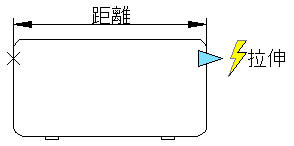

一、動態圖塊概念：
您可以藉由將參數和動作加入圖塊編輯器中的圖塊的方式，把動態模式加入新或既有圖塊定義。在以下範例中，桌面圖塊會展示在圖塊編輯器中。該圖塊包含一個線性參數和一個拉伸動作，前者的外觀與標註類似，並標示有「Distance」，而後者則顯示為閃電，並標示有「Stretch」。

若要使一個圖塊成為動態圖塊，您至少要加入一個參數。然後再加入一個動作，將動作與參數進行關聯。您加入至圖塊定義的參數和動作類型將定義圖塊參考在圖面中的工作方式。
[影音]AutoCAD 2D 動態圖塊 快速入門及建立：
二、加入參數與動作：
參數定義自訂性質並指定圖塊中幾何圖形的位置、距離和角度。
動作定義在修改圖塊時，動態圖塊參考幾何圖形如何移動或變更。當您將動作加入至圖塊時，您必須將它們與參數及幾何圖形相關聯。

[影音]AutoCAD 2D 動態圖塊 加入參數與動作：
三、使用參數表：
您可以使用參數表為動態圖塊定義性質並為其指定性質值。當您在圖面中操控圖塊參考時，與圖塊參考關聯的性質值會變更。
[影音]AutoCAD 2D 動態圖塊 使用參數表-指定內定值：
四、可見性參數：
透過可見性參數，可以控制圖塊中物件的可見性。
[影音]AutoCAD 2D 動態圖塊 可見性參數1/2：
[影音]AutoCAD 2D 動態圖塊 可見性參數2/2：
未來論壇會持續分享有聲音格式的教學影片，但是現階段仍然有權限控制
大家可以先參考以上關於 動態圖塊系列 的影音教學，若是您覺得有幫助想要觀看更多的影音教學
建議您可以參考 贊助會員 方案，加入贊助會員即可享有所有瀏覽權限，未來也希望各位能繼續支持及鼓勵
加入 AutoCAD顧問 可以讓您職場路上發生的 AutoCAD使用問題 迎刃而解 喔
相關主題：